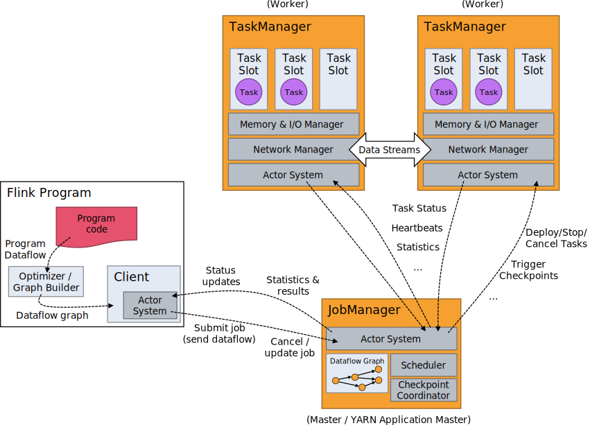
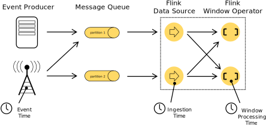

Concepts
- Programs and Dataflows
- Distributed Execution
- Time and Windows
- State and Fault Tolerance
- Batch on Streaming
Programs and Dataflows
The basic building blocks of Flink programs are streams and transformations (note that a DataSet is internally also a stream). A stream is an intermediate result, and a transformation is an operation that takes one or more streams as input, and computes one or more result streams from them.
When executed, Flink programs are mapped to streaming dataflows, consisting of streams and transformation operators. Each dataflow starts with one or more sources and ends in one or more sinks. The dataflows may resemble arbitrary directed acyclic graphs (DAGs). (Special forms of cycles are permitted via iteration constructs, we omit this here for simplicity).
In most cases, there is a one-to-one correspondence between the transformations in the programs and the operators in the dataflow. Sometimes, however, one transformation may consist of multiple transformation operators.

Parallel Dataflows
Programs in Flink are inherently parallel and distributed. Streams are split into stream partitions and operators are split into operator subtasks. The operator subtasks execute independently from each other, in different threads and on different machines or containers.
The number of operator subtasks is the parallelism of that particular operator. The parallelism of a stream is always that of its producing operator. Different operators of the program may have a different parallelism.

Streams can transport data between two operators in a one-to-one (or forwarding) pattern, or in a redistributing pattern:
-
One-to-one streams (for example between the source and the map() operators) preserves partitioning and order of elements. That means that subtask[1] of the map() operator will see the same elements in the same order, as they were produced by subtask[1] of the source operator.
-
Redistributing streams (between map() and keyBy/window, as well as between keyBy/window and sink) change the partitioning of streams. Each operator subtask sends data to different target subtasks, depending on the selected transformation. Examples are keyBy() (re-partitions by hash code), broadcast(), or rebalance() (random redistribution). In a redistributing exchange, order among elements is only preserved for each pair of sending- and receiving task (for example subtask[1] of map() and subtask[2] of keyBy/window).
Tasks & Operator Chains
For distributed execution, Flink chains operator subtasks together into tasks. Each task is executed by one thread. Chaining operators together into tasks is a useful optimization: it reduces the overhead of thread-to-thread handover and buffering, and increases overall throughput while decreasing latency. The chaining behavior can be configured in the APIs.
The sample dataflow in the figure below is executed with five subtasks, and hence with five parallel threads.

Distributed Execution
Master, Worker, Client
The Flink runtime consists of two types of processes:
-
The master processes (also called JobManagers) coordinate the distributed execution. They schedule tasks, coordinate checkpoints, coordinate recovery on failures, etc.
There is always at least one master process. A high-availability setup will have multiple master processes, out of which one is always the leader, and the others are standby.
-
The worker processes (also called TaskManagers) execute the tasks (or more specifically, the subtasks) of a dataflow, and buffer and exchange the data streams.
There must always be at least one worker process.
The master and worker processes can be started in an arbitrary fashion: Directly on the machines, via containers, or via resource frameworks like YARN. Workers connect to masters, announcing themselves as available, and get work assigned.
The client is not part of the runtime and program execution, but is used to prepare and send a dataflow to the master.
After that, the client can disconnect, or stay connected to receive progress reports. The client runs either as part of the
Java/Scala program that triggers the execution, or in the command line process ./bin/flink run ....

Workers, Slots, Resources
Each worker (TaskManager) is a JVM process, and may execute one or more subtasks in separate threads. To control how many tasks a worker accepts, a worker has so called task slots (at least one).
Each task slot represents a fixed subset of resources of the TaskManager. A TaskManager with three slots, for example, will dedicate 1/3 of its managed memory to each slot. Slotting the resources means that a subtask will not compete with subtasks from other jobs for managed memory, but instead has a certain amount of reserved managed memory. Note that no CPU isolation happens here, slots currently only separate managed memory of tasks.
Adjusting the number of task slots thus allows users to define how subtasks are isolated against each other. Having one slot per TaskManager means each task group runs in a separate JVM (which can be started in a separate container, for example). Having multiple slots means more subtasks share the same JVM. Tasks in the same JVM share TCP connections (via multiplexing) and heartbeats messages. They may also share data sets and data structures, thus reducing the per-task overhead.

By default, Flink allows subtasks to share slots, if they are subtasks of different tasks, but from the same job. The result is that one slot may hold an entire pipeline of the job. Allowing this slot sharing has two main benefits:
-
A Flink cluster needs exactly as many tasks slots, as the highest parallelism used in the job. No need to calculate how many tasks (with varying parallelism) a program contains in total.
-
It is easier to get better resource utilization. Without slot sharing, the non-intensive source/map() subtasks would block as many resources as the resource intensive window subtasks. With slot sharing, increasing the base parallelism from two to six yields full utilization of the slotted resources, while still making sure that each TaskManager gets only a fair share of the heavy subtasks.
The slot sharing behavior can be controlled in the APIs, to prevent sharing where it is undesirable. The mechanism for that are the resource groups, which define what (sub)tasks may share slots.
As a rule-of-thumb, a good default number of task slots would be the number of CPU cores. With hyper threading, each slot then takes 2 or more hardware thread contexts.

Time and Windows
Aggregating events (e.g., counts, sums) works slightly differently on streams than in batch processing. For example, it is impossible to first count all elements in the stream and then return the count, because streams are in general infinite (unbounded). Instead, aggregates on streams (counts, sums, etc), are scoped by windows, such as “count over the last 5 minutes”, or “sum of the last 100 elements”.
Windows can be time driven (example: every 30 seconds) or data driven (example: every 100 elements). One typically distinguishes different types of windows, such as tumbling windows (no overlap), sliding windows (with overlap), and session windows (gap of activity).

More window examples can be found in this blog post.
Time
When referring to time in a streaming program (for example to define windows), one can refer to different notions of time:
-
Event Time is the time when an event was created. It is usually described by a timestamp in the events, for example attached by the producing sensor, or the producing service. Flink accesses event timestamps via timestamp assigners.
-
Ingestion time is the time when an event enters the Flink dataflow at the source operator.
-
Processing Time is the local time at each operator that performs a time-based operation.

More details on how to handle time are in the event time docs.
State and Fault Tolerance
While many operations in a dataflow simply look at one individual event at a time (for example an event parser), some operations remember information across individual events (for example window operators). These operations are called stateful.
The state of stateful operations is maintained in what can be thought of as an embedded key/value store. The state is partitioned and distributed strictly together with the streams that are read by the stateful operators. Hence, access the key/value state is only possible on keyed streams, after a keyBy() function, and is restricted to the values of the current event’s key. Aligning the keys of streams and state makes sure that all state updates are local operations, guaranteeing consistency without transaction overhead. This alignment also allows Flink to redistribute the state and adjust the stream partitioning transparently.

Checkpoints for Fault Tolerance
Flink implements fault tolerance using a combination of stream replay and checkpoints. A checkpoint defines a consistent point in streams and state from which a streaming dataflow can resume, and maintain consistency (exactly-once processing semantics). The events and state updates since the last checkpoint are replayed from the input streams.
The checkpoint interval is a means of trading off the overhead of fault tolerance during execution, with the recovery time (the amount of events that need to be replayed).
More details on checkpoints and fault tolerance are in the fault tolerance docs.

State Backends
The exact data structures in which the key/values indexes are stored depend on the chosen state backend. One state backend stores data in an in-memory hash map, another state backend uses RocksDB as the key/value index. In addition to defining the data structure that holds the state, the state backends also implements the logic to take a point-in-time snapshot of the key/value state and store that snapshot as part of a checkpoint.
Batch on Streaming
Flink executes batch programs as a special case of streaming programs, where the streams are bounded (finite number of elements). A DataSet is treated internally as a stream of data. The concepts above thus apply to batch programs in the same way as well as they apply to streaming programs, with minor exceptions:
-
Programs in the DataSet API do not use checkpoints. Recovery happens by fully replaying the streams. That is possible, because inputs are bounded. This pushes the cost more towards the recovery, but makes the regular processing cheaper, because it avoids checkpoints.
-
Stateful operation in the DataSet API use simplified in-memory/out-of-core data structures, rather than key/value indexes.
-
The DataSet API introduces special synchronized (superstep-based) iterations, which are only possible on bounded streams. For details, check out the iteration docs.